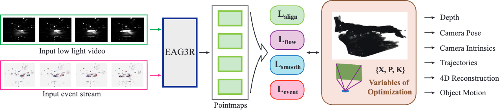
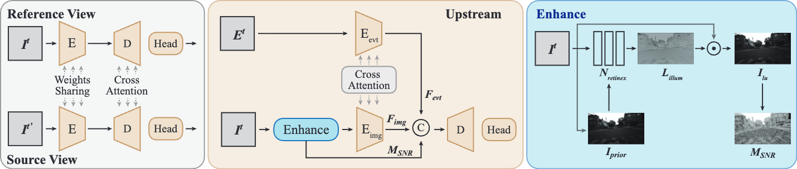
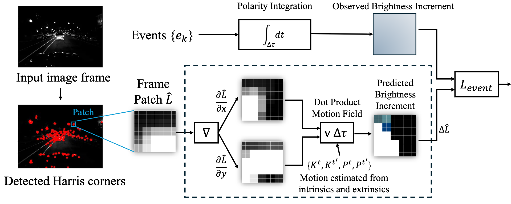
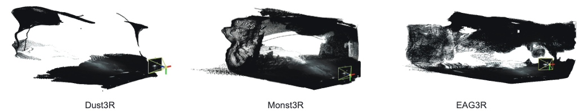
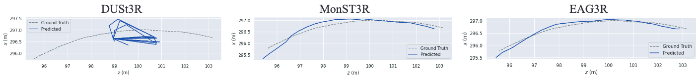

Robust 3D geometry estimation from videos is critical for applications such as autonomous navigation and SLAM. However, existing RGB-only approaches struggle under real-world conditions involving dynamic objects and extreme illumination.
In this paper, we propose EAG3R, a novel geometry estimation framework that augments pointmap-based reconstruction with asynchronous event streams. Built upon the MonST3R backbone, EAG3R introduces: (1) a Retinex-inspired enhancement module and a lightweight event adapter with SNR-aware fusion mechanism; and (2) a novel event-based photometric consistency loss. Our method enables robust geometry estimation in challenging dynamic low-light scenes without requiring retraining on night-time data (Zero-Shot Generalization).

A Retinex-based module recovers visibility in underexposed regions and estimates a Signal-to-Noise Ratio (SNR) map to quantify pixel-wise reliability.
A lightweight Swin Transformer extracts high-fidelity motion features from sparse event streams, capturing dynamics hidden in RGB dark noise.
Features are fused adaptively using cross-attention. The network learns to trust RGB in well-lit areas and leverage Event signals in the dark, guided by the SNR map.
To supervise dynamic motion without ground truth, we propose a novel loss function derived from the physical event generation model.

Comparison against State-of-the-Art methods in dynamic night scenes.


@inproceedings{wu2025eag3r,
title={EAG3R: Event-Augmented 3D Geometry Estimation for Dynamic and Extreme-Lighting Scenes},
author={Wu, Xiaoshan and Yu, Yifei and Lyu, Xiaoyang and Huang, Yi-Hua and Zhang, Baoheng and Wang, Zhongrui and Wang, Bo and Qi, Xiaojuan},
booktitle={Advances in Neural Information Processing Systems (NeurIPS)},
year={2025}
}